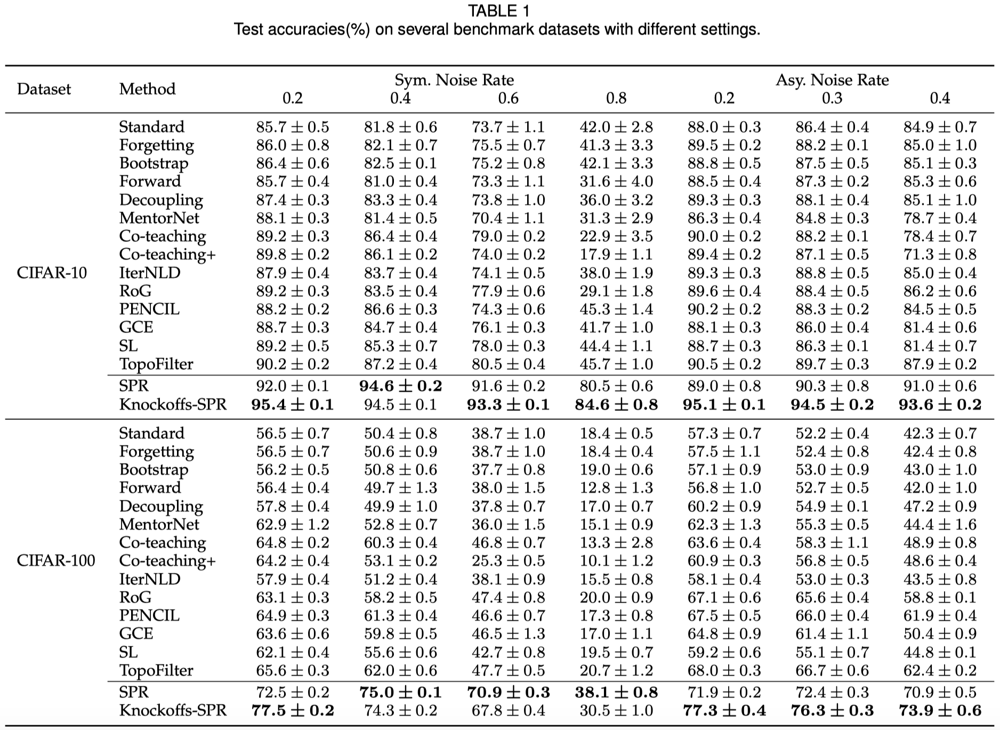
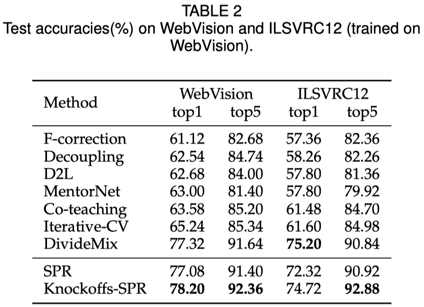
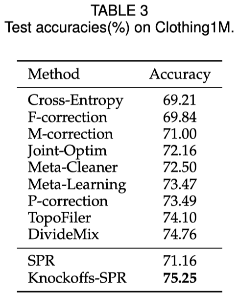
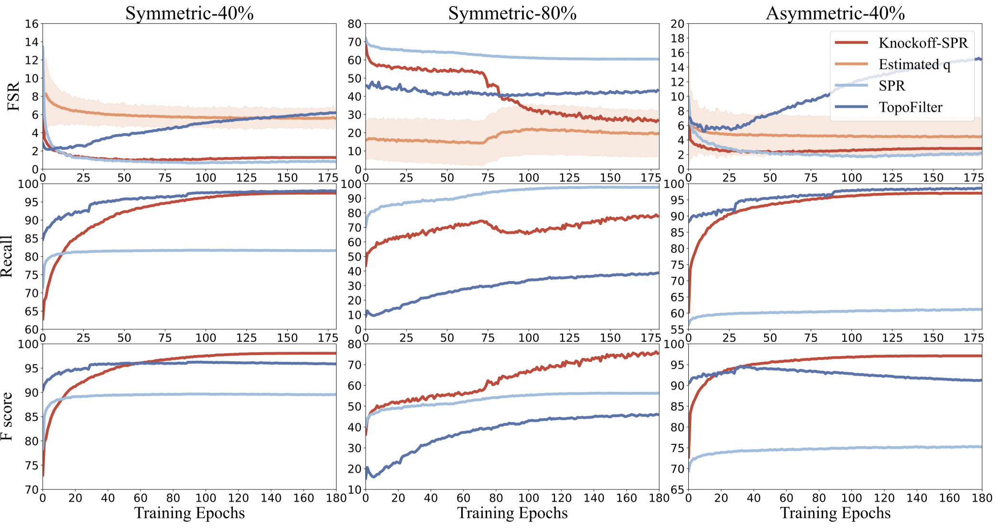

Scalable Penalized Regression
[Papers:CVPR22,Journal extension] [code] [bib]
@inproceedings{wang2022scalable,
title={Scalable Penalized Regression for Noise Detection in Learning with Noisy Labels},
author={Wang, Yikai and Xinwei Sun and Fu, Yanwei},
booktitle={IEEE/CVF Conference on Computer Vision and Pattern Recognition (CVPR)},
year={2022}
}
@article{wang2023knockoffs,
title={Knockoffs-SPR: Clean Sample Selection in Learning with Noisy Labels},
author={Wang, Yikai and Fu, Yanwei and Sun, Xinwei},
journal={arXiv preprint arXiv:2301.00545},
year={2023}
}
Abstract
SPR is a theoretically guaranteed clean sample selection framework for learning with noisy labels. In this paper, to solve the problem of clean sample selection in learning with noisy labels, we first introduce the algorithm SPR we published in CVPR22. Under irrepresentable condition, the noise samples identified by SPR are a subset of ground-truth noise samples. Further, under the large error condition, the identified noise sample set is equal to the ground-truth noise sample set. In practical applications, we cannot know whether the irrepresentable condition is satisfied. In this case, we argue that in the general clean sample selection algorithm, controlling the false selection rate (FSR) of selected clean samples is critical. Based on this, we propose Knockoffs-SPR, an algorithm capable of controlling FSR below a pre-specified upper bound \(q\).
Background
In classification, neural networks often require a large amount of labeled data for training. In this process, the quality of the annotation is crucial. Since the neural network has a strong fitting ability, it can even effectively fit the randomly generated labels, so when the label used for training is wrong, it will damage the classification ability of the neural network. This paper studies the sample selection algorithm that selects a subset of the training set and removes the noisy labels to better train the neural network. In this paper, we call mislabeled samples as noisy samples and correctly labeled samples as clean samples.
Framework
Knockoffs-SPR runs a cycle between network learning and sample selection. We characterize the confidence of labels based on an approximately linear relationship between features and one-hot vectors, from which clean samples are selected.
In SPR, we make a linear approximation to the relationship between neural network features and one-hot labels. The linear approximation is very weak, so if a very weak approximation can still well fit the feature label pair of a sample, we consider the sample to be a clean sample; and if the approximation cannot fit a sample well, the sample is likely to be a noise sample. Based on this difference, we introduce a variable to describe the fitting degree of the linear model to the sample, and obtain the credibility of each sample by solving the variable, so as to select clean samples.
According to the model selection consistency theory of LASSO, we can prove that under certain conditions, SPR can identify all noise samples.
However, the theoretical conditions of SPR cannot be known in advance whether it is true in reality, so the practical significance is limited. When the theoretical condition of SPR is not established, there may be noise samples in the selected clean samples. To address this issue, we propose Knockoffs-SPR in our journal extension article.
In Knockoffs-SPR, we study how to control the false selection rate of clean samples as much as possible in the general sample selection environment. We still rely on a linear approximation of the relationship between neural network features and one-hot labels. But in Knockoffs-SPR, we first focus on a single sample and compare its label confidence with that of a randomly permuted label. The comparison between the two has different behaviour when the label of the sample is a clean label and a noisy label, and we construct a comparison statistic based on this difference. Afterwards, we compare the comparison statistics of each sample among samples to identify clean samples. We demonstrate that, under such a series of configurations, Knockoffs-SPR is naturally capable of controlling the false selection rate of clean samples.
Next, we introduce the algorithm details and theoretical results of SPR and Knockoffs-SPR.
SPR
We start with the inherent linear relation existed in neural networks. For an ideally trained network, we have \[y_i=\textrm{SoftMax}(x_i^{\top}\beta)\] between the feature vector and one-hot labels. We approximate this by dropping the soft-max operator as: \[y_i=x_i^{\top}\beta+\varepsilon_i\] This approximation is weak, but helpful for our target.
As we know, linear regression model is very sensitive to outliers. We can use the residual prediction error to identify them by \[r_i=y_i-x_i^{\top}\hat{\beta}\] or more statistically, using the leave-one-out testing hypothesis. But this is costly when we have lots of training data. Thus, we introduce an explicit parameter \(\gamma_i\), to denote the predict error as \[y_i=x_i^{\top}\beta+\gamma_i+\varepsilon_i\] For clean data, the linear relation is strong, thus we should have a small or even zero \(\Vert\gamma_i\Vert\). If the data is mis-labeled, a large \(\Vert\gamma_i\Vert\) will returned by the linear model.
Now our target is to solve \(\gamma_i\) in this model and identify noisy data if \(\gamma_i\neq 0\). Our optimization problem is as follows \[(\hat{\beta},\hat{\gamma})=\underset{\beta,\gamma}{\mathrm{argmin}}\Vert Y-X\beta-\gamma\Vert_\mathrm{F}^2+\lambda R(\gamma)\] By finding the closed-form solution of \(\beta\) with respect to \(\gamma\), we can transform the problem into \[\underset{\gamma}{\mathrm{argmin}}\left\Vert \tilde{Y}-\tilde{X}\gamma\right\Vert_\mathrm{F}^2+\lambda R\left(\gamma\right)\] with some variable substitutions.
As it is hard to choose a proper \(\lambda\) in advance, we instead regard the estimate \(\hat{\gamma}\) as a function of \(\lambda\). Then we can generate the solution path of \(\hat{\gamma}\) with respect to \(\lambda\) as:
Noise Set Recovery of SPR
Based on the model selection consistency of LASSO model, we can provide a theory for the noise set recovery of SPR with L1 penalty. Assume \(\varepsilon\) is zero-mean sub-Gaussian noise. We give three conditions:
- (C1: Restricted eigenvalue) \[\lambda_{\min}(\mathring{X}_{S}^{\top}\mathring{X}_{S})=C_{\min} >0\]
- (C2: Irrepresentability) \(\exists\ \eta\in\left(0,1\right]\), \[\Vert\mathring{X}_{S^c}^{\top}\mathring{X}_{S}(\mathring{X}_{S}^{\top}\mathring{X}_{S})^{-1}\Vert_\infty \leq 1-\eta \]
- (C3: Large error) \[\gamma^*_{\min}:= \min_{i\in S}|\gamma^*_{i}|>h(\lambda,\eta,\mathring{X},\gamma^*)\] where \(\Vert A\Vert_\infty:= \max_i \sum_j |A_{i,j}|\), and \(h(\lambda,\eta,\mathring{X},\gamma^*)=\lambda\eta/\sqrt{C_{\min}\mu_{\mathring{X}}}+\lambda \Vert(\mathring{X}_{S}^{\top}\mathring{X}_{S})^{-1}\mathrm{sign}(\gamma_{S}^*)\Vert_\infty\)
Theorem(Noisy Set Recovery of SPR). Let \(\lambda\geq \frac{2\sigma \sqrt{\mu_{\mathring{X}}}}{\eta}\sqrt{\log cn}\). Then with probability greater than \(1-2(cn)^{-1}\), SPR has a unique solution \(\hat{\gamma}\) such that:
- If C1 and C2 hold, \(\hat{O}\subseteq O\). That is, the noisy set identified by SPR is the subset of ground-truth noisy set;
- If C1, C2 and C3 hold, \(\hat{O}= O\), which means SPR can identify all the noisy data.
Knockoffs-SPR
The irrepresentable condition and the information of the ground-truth clean set in the noisy set recovery theorem are practically unknown, making this theory hard to be used in the real life. Particularly, with \(O\) unknown, the algorithm can stop at an improper time such that the noisy rate of the selected clean data can be still high, making the next-round trained model corrupted a lot by noisy patterns.
To resolve the problem of false selection in SPR, we in this section propose a data-adaptive sample selection method, that targets controlling the expected noisy rate of the selected data dubbed as False-Selection-Rate (FSR) under the desired level \(q\) (\(0 < q < 1\)): \[ \mathrm{FSR}=\mathbb{E}\left[\frac{\#\left\{ j: j\not\in \mathcal{H}_0 \cap \hat{C}\right\} }{\#\left\{ j:j\in\hat{C}\right\} \lor1}\right], \] where \(\hat{C}=\{j:\hat{\gamma}_j= 0\}\) is the recovered clean set of \(\gamma\), and \(\mathcal{H}_0: \gamma^*_i = 0\) denotes the null hypothesis, i.e., the sample \(i\) belonging to the clean dataset. Therefore, the FSR targets controlling the false rate among selected null hypotheses, which is also called the expected rate of the type-II error in hypothesis testing.
Formally speaking, we split the whole data \(\mathcal{D}\) into \(\mathcal{D}_1:=(X_1,Y_1)\) and \(\mathcal{D}_2:=(X_2,Y_2)\) with \(n_i:=|\mathcal{D}_i|\), and implement Knockoffs-SPR on both \(\mathcal{D}_1\) and \(\mathcal{D}_2\). In the following, we only introduce the procedure on \(\mathcal{D}_2\), as the procedure for \(\mathcal{D}_1\) shares the same spirit. Roughly speaking, the procedure is composed of three steps: i) estimate \(\beta\) on \(\mathcal{D}_1\); ii) estimate \(\tilde{\gamma}(\lambda))\) on \(\mathcal{D}_2\); and iii) construct the comparison statistics and selection filters.
Step i): Estimating \(\beta\) on \(\mathcal{D}_1\). Our target is to provide an estimate of \(\beta\) that is independent of \(\mathcal{D}_2\). The simplest strategy is to use the standard OLS estimator to obtain \(\hat{\beta}_1\). However, this estimator may not be accurate since it is corrupted by noisy samples. For this consideration, we first run SPR on \(\mathcal{D}_1\) to get clean data and then solve \(\beta\) via OLS on the estimated clean data.
Step ii): Estimating \(\left(\gamma(\lambda),\tilde{\gamma}(\lambda)\right)\) on \(\mathcal{D}_2\). After obtaining the solution \(\hat{\beta}_1\) on \(\mathcal{D}_1\) , we learn the \(\gamma(\lambda)\) on \(\mathcal{D}_2\): \begin{equation} \frac{1}{2}\left\Vert Y_2-X_2\hat{\beta}_1-\gamma_{2}\right\Vert_{\mathrm{F}}^{2}+P(\gamma_{2};\lambda). \end{equation} For each one-hot encoded vector \(y_{2,j}\), we randomly permute the position of 1 and obtain another one-hot vector \(\tilde{y}_{2,j}\neq y_{2,j}\). For clean data \(j\), the \(\tilde{y}_{2,j}\) turns to be a noisy label; while for noisy data, the \(\tilde{y}_{2,j}\) is switched to another noisy label with probability \(\frac{c-2}{c-1}\) or clean label with probability \(\frac{1}{c-1}\). After obtaining the permuted matrix as \(\tilde{Y}_2\), we learn the solution paths \(\left(\gamma_{2}(\lambda), \tilde{\gamma}_2(\lambda)\right)\) using the same algorithm as SPR via: \begin{equation} \begin{cases} \frac{1}{2}\left\Vert Y_2-X_2\tilde{\beta}_1-\gamma_2\right\Vert _{\mathrm{F}}^{2}+\sum_j P(\gamma_{2,j};\lambda),\\ \frac{1}{2}\left\Vert \tilde{Y}_2-X_2\tilde{\beta}_1-\tilde{\gamma}_2\right\Vert _{\mathrm{F}}^{2}+\sum_j P(\tilde{\gamma}_{2,j};\lambda). \end{cases} \end{equation}
Step iii): Comparison statistics and selection filters. After obtaining the solution path \(\left(\gamma_{2}(\lambda), \tilde{\gamma}_2(\lambda)\right)\), we define sample significance scores with respect to \(Y_{2,i}\) and \(\tilde{Y}_{2,i}\) of each \(i\) respectively, as the selection time: \(Z_i := \sup\{\lambda: \Vert \gamma_{2,i}(\lambda) \Vert_2 \neq 0\}\) and \(\tilde{Z}_i := \sup\{\lambda: \Vert \tilde{\gamma}_{2,i} (\lambda) \Vert_2 \neq 0\}\). Our motivation is that for clean samples, we will be more likely to have \(Z_i < \tilde{Z}_i\), and for noisy samples, if the permuted label is still a noise label, we have no information to compare\(Z_i, \tilde {Z}_i\), so it is assumed that \(Z_i < \tilde{Z}_i\) is close to the probability of \(Z_i > \tilde{Z}_i\), and if the permuted label is a clean label, then it is more likely to have \(Z_i > \tilde{Z}_i\). Based on this difference, using \(Z_i, \tilde{Z}_i\), we construct a comparison statistic as: \begin{equation} \label{eq:w} W_i := Z_i \cdot \mathrm{sign}(Z_i - \tilde{Z}_i). \end{equation} Based on these statistics, we define a data-dependent threshold \(T\) as \begin{equation} T=\max\left\{ t>0:\frac{1 + \#\left\{ j:0 < W_{j} \leq t\right\} }{\#\left\{ j:-t\leq W_{j} < 0 \right\} \lor 1}\leq q\right\}, \end{equation} or \(T=0\) if this set is empty, where \(q\) is the pre-defined upper bound. Our algorithm will select the clean subset identified by \begin{equation} \label{eq:clean-set} C_2:=\{j:-T\leq W_j < 0 \}. \end{equation} Empirically, \(T\) may be equal to \(0\) if the threshold \(q\) is sufficiently small. In this regard, no clean data are selected, which is meaningless. Therefore, we start with a small \(q\) and iteratively increase \(q\) and calculate \(T\), until an attainable \(T\) such that \(T > 0\) to bound the FSR as small as possible. In practice, when the FSR cannot be bounded by \(q=50\%\), we will end the selection and simply select half of the most possible clean examples via \(\{W_j\}\).
FSR control of Knockoffs-SPR
Our target is to show that \(\mathrm{FSR}\leq q\) with our data-adaptive threshold \(T\). Our main result is as follows:
Theorem(FSR control). For \(c\)-class classification task, and for all \(0 < q \leq1\), the solution of Knockoffs-SPR holds \begin{equation} \mathrm{FSR}(T)\leq q \end{equation} with the threshold \(T\) for two subsets defined respectively as \begin{equation*} T_i=\max\left\{ t\in\mathcal{W}:\frac{1+\#\left\{ j:0 < W_{j}\leq t\right\} }{\#\left\{ j:-t\leq W_{j} < 0 \right\} \lor 1}\leq \frac{c-2}{2c}q\right\}. \end{equation*}
This theorem tells us that FSR can be controlled by the given threshold \(q\) using the procedure of Knockoffs-SPR. Compared to SPR, this procedure is more practical and useful in real-world experiments.
Experiments
We conducted experiments on two synthetic label noise datasets, CIFAR-10 and CIFAR-100. We also test Knockoffs-SPR on two real-world noisy datasets, WebVision and Clothing1M. The experimental results are as follows:



